NumPy: самые основы для начинающих#
Добро пожаловать в руководство по NumPy для тех, кто начинает с нуля!
NumPy (Numerical Python — «численный Python») — библиотека Python с открытым исходным кодом, широко используемая в науке и технике. Она предоставляет структуры многомерных массивов, например однородный N-мерный ndarray, и множество функций для эффективной работы с ними. Подробнее см. Что такое NumPy. Если у вас есть замечания или предложения, свяжитесь с нами!
Как импортировать NumPy#
После установки NumPy его можно импортировать в Python так:
import numpy as np
Эта широко распространенная конвенция позволяет получить доступ к функциям NumPy с коротким, узнаваемым префиксом (np.), отличая при этом функции NumPy от других, которые имеют то же имя.
Разбор примера кода#
В документации NumPy вы найдете блоки, которые выглядят следующим образом:
>>> a = np.array([[1, 2, 3],
... [4, 5, 6]])
>>> a.shape
(2, 3)
Текст после >>> или ... — это ввод: код, который нужно написать в скрипте или интерактивной оболочке Python. Всё остальное — вывод, то есть результаты выполнения кода. Обозначения >>> и ... не входят в сам код; если ввести их в оболочке Python, может возникнуть ошибка.
Для запуска кода в примерах вы можете скопировать и вставить его в скрипт Python или REPL, или использовать экспериментальные интерактивные примеры в браузере, предоставленные в различных местах в документации.
Зачем использовать NumPy? #
Списки Python — удобные контейнеры общего назначения. Они могут быть неоднородными, то есть содержать элементы разных типов, и достаточно быстро выполняют отдельные операции над небольшим числом элементов.
В зависимости от свойств данных и необходимых операций другие контейнеры могут подходить лучше. Учёт этих свойств позволяет повысить скорость, уменьшить расход памяти и предоставить высокоуровневый синтаксис для распространённых задач обработки. NumPy особенно эффективен при обработке больших объёмов однородных данных одного типа на CPU.
Что такое массив?#
В компьютерном программировании массив — это структура для хранения и извлечения данных. Мы часто говорим о массиве, как о сетке в пространстве, причем каждая ячейка хранит один элемент данных. Например, если бы каждый элемент данных был числом, мы могли бы визуализировать «одномерный» массив, как список:
Двумерный массив будет похож на таблицу:
Трехмерный массив будет похож на набор таблиц, возможно, сложенных так, как если бы они были напечатаны на отдельных страницах. В NumPy эта идея обобщена на произвольное количество измерений, поэтому фундаментальный класс массива называется ndarray: он представляет собой «N-мерный массив».
У большинства массивов NumPy есть некоторые ограничения. Например:
Все элементы массива должны относиться к одному типу данных.
После создания общий размер массива не может измениться.
Форма должна быть «прямоугольной», а не «рваной»: например, во всех строках двумерного массива должно быть одинаковое число столбцов.
При выполнении этих условий NumPy использует их, чтобы сделать массивы быстрее, экономнее по памяти и удобнее, чем структуры данных с менее строгими ограничениями.
В оставшейся части этого документа мы будем использовать слово «массив» для обозначения экземпляра ndarray.
Основы работы с массивами#
Один из способов создать массив — передать последовательность Python, например список:
>>> a = np.array([1, 2, 3, 4, 5, 6])
>>> a
array([1, 2, 3, 4, 5, 6])
К элементам массива можно обращаться разными способами. Например, к отдельному элементу этого массива можно обратиться так же, как к элементу исходного списка: указать его целочисленный индекс в квадратных скобках.
>>> a[0]
1
Примечание
Как и в случае со встроенными последовательностями Python, массивы NumPy являются «0-индексированными»: первый элемент массива доступен с использованием индекса 0, а не 1.
Как и исходный список, массив изменяем.
>>> a[0] = 10
>>> a
array([10, 2, 3, 4, 5, 6])
Также, как и в оригинальном списке, для индексации можно использовать срезовую нотацию Python.
>>> a[:3]
array([10, 2, 3])
Важное отличие: срез списка копирует элементы в новый список, а срез массива возвращает представление — объект, который обращается к данным исходного массива. Через представление можно изменить исходный массив.
>>> b = a[3:]
>>> b
array([4, 5, 6])
>>> b[0] = 40
>>> a
array([ 10, 2, 3, 40, 5, 6])
См. Копии и представления для более полного объяснения того, когда операции с массивами возвращают представления, а не копии.
Двумерные массивы и массивы с большим числом измерений можно инициализировать вложенными последовательностями Python:
>>> a = np.array([[1, 2, 3, 4], [5, 6, 7, 8], [9, 10, 11, 12]])
>>> a
array([[ 1, 2, 3, 4],
[ 5, 6, 7, 8],
[ 9, 10, 11, 12]])
В NumPy измерение массива иногда называют «осью». Эта терминология может быть полезна для устранения неоднозначности между размерностью массива и размерностью данных, представленных массивом. Например, массив a может представлять три точки, каждая из которых находится в четырехмерном пространстве, но a имеет только две «оси».
Ещё одно отличие массива от списка списков: для обращения к элементу массива можно указать индексы по всем осям через запятую в одной паре квадратных скобок. Например, элемент 8 находится в строке 1 и столбце 3:
>>> a[1, 3]
8
Примечание
В математике элемент матрицы обычно задают сначала индексом строки, затем индексом столбца. Для двумерного массива это тоже верно, но полезнее считать индекс столбца последним, а индекс строки — предпоследним. Такое представление обобщается на массивы с любым числом измерений.
Примечание
Нульмерный массив (0-D) иногда называют «скаляром», одномерный (1-D) — «вектором», двумерный (2-D) — «матрицей», а N-мерный (N-D, где N обычно больше 2) — «тензором». Для ясности лучше избегать этих математических терминов, говоря о массивах: соответствующие математические объекты ведут себя иначе (например, матричное умножение принципиально отличается от умножения массивов). Кроме того, в научной экосистеме Python есть другие объекты с такими названиями: например, основная структура данных PyTorch — «тензор».
Атрибуты массива #
В этом разделе рассматриваются атрибуты ndim, shape, size и dtype массива.
Число измерений массива хранится в атрибуте ndim.
>>> a.ndim
2
Форма массива представляет собой кортеж неотрицательных целых чисел, определяющих количество элементов по каждому измерению.
>>> a.shape
(3, 4)
>>> len(a.shape) == a.ndim
True
Общее число элементов массива хранится в атрибуте size.
>>> a.size
12
>>> import math
>>> a.size == math.prod(a.shape)
True
Массивы, как правило, «однородны», то есть содержат элементы только одного «типа данных». Тип данных записывается в атрибуте dtype.
>>> a.dtype
dtype('int64') # "int" for integer, "64" for 64-bit
Комментарии к примеру на русском
- int означает целочисленный тип, 64 — разрядность
Как создать базовый массив #
В этом разделе рассматриваются np.zeros(), np.ones(), np.empty(), np.arange(), np.linspace()
Массив можно создать из последовательности элементов или сразу заполнить значениями 0:
>>> np.zeros(2)
array([0., 0.])
Или массив, заполненный 1:
>>> np.ones(2)
array([1., 1.])
Можно создать и неинициализированный массив! Функция empty создаёт массив с неопределённым начальным содержимым, которое зависит от состояния памяти. Примечание переводчика: слово «случайное» в оригинале не означает генерацию случайных чисел. Преимущество empty перед zeros и подобными функциями — скорость: только обязательно затем присвойте значение каждому элементу!
>>> # Create an empty array with 2 elements
>>> np.empty(2)
array([3.14, 42. ]) # may vary
Комментарии к примеру на русском
- Создаём неинициализированный массив из двух элементов
- Результат может отличаться
Можно создать массив из диапазона значений:
>>> np.arange(4)
array([0, 1, 2, 3])
Можно также создать массив равноотстоящих значений. Для этого задайте первое число, последнее число и шаг.
>>> np.arange(2, 9, 2)
array([2, 4, 6, 8])
Функция np.linspace() также позволяет создать массив значений, равномерно расположенных на заданном интервале:
>>> np.linspace(0, 10, num=5)
array([ 0. , 2.5, 5. , 7.5, 10. ])
Указание типа данных
По умолчанию используется тип с плавающей точкой (np.float64), но нужный тип данных можно явно задать именованным аргументом dtype.
>>> x = np.ones(2, dtype=np.int64)
>>> x
array([1, 1])
Добавление, удаление и сортировка элементов #
В этом разделе рассматриваются np.sort() и np.concatenate()
Для сортировки массива удобно использовать np.sort(). При вызове можно задать ось, алгоритм сортировки и порядок сравнения полей.
Если начать с этого массива:
>>> arr = np.array([2, 1, 5, 3, 7, 4, 6, 8])
Быстро отсортировать числа по возрастанию можно так:
>>> np.sort(arr)
array([1, 2, 3, 4, 5, 6, 7, 8])
Помимо sort, возвращающей отсортированную копию массива, можно использовать:
argsort, выполняющая косвенную сортировку по указанной оси,lexsort, выполняющая косвенную устойчивую сортировку по нескольким ключам,searchsorted, которая находит элементы в отсортированном массиве, иpartition— частичная сортировка.
Чтобы узнать больше о сортировке массива, см.: sort.
Если вы начнете с этих массивов:
>>> a = np.array([1, 2, 3, 4])
>>> b = np.array([5, 6, 7, 8])
Их можно объединить с помощью np.concatenate().
>>> np.concatenate((a, b))
array([1, 2, 3, 4, 5, 6, 7, 8])
Или, если вы начнете с этих массивов:
>>> x = np.array([[1, 2], [3, 4]])
>>> y = np.array([[5, 6]])
Вы можете объединить их с помощью:
>>> np.concatenate((x, y), axis=0)
array([[1, 2],
[3, 4],
[5, 6]])
Чтобы удалить элементы массива, удобно выбрать индексированием те элементы, которые нужно оставить.
Подробнее об объединении массивов см. в документации concatenate.
Как узнать форму массива и число его элементов?#
Этот раздел охватывает ndarray.ndim, ndarray.size, ndarray.shape
ndarray.ndim показывает число осей, то есть измерений массива.
ndarray.size сообщает общее число элементов массива. Оно равно произведению размеров массива по всем осям.
ndarray.shape показывает кортеж целых чисел — число элементов вдоль каждого измерения. Например, у двумерного массива с 2 строками и 3 столбцами форма равна (2, 3).
Например, если вы создаете этот массив:
>>> array_example = np.array([[[0, 1, 2, 3],
... [4, 5, 6, 7]],
...
... [[0, 1, 2, 3],
... [4, 5, 6, 7]],
...
... [[0 ,1 ,2, 3],
... [4, 5, 6, 7]]])
Чтобы узнать число измерений массива, выполните:
>>> array_example.ndim
3
Чтобы найти общее количество элементов в массиве, запустите:
>>> array_example.size
24
Чтобы узнать форму массива, выполните:
>>> array_example.shape
(3, 2, 4)
Можно ли изменить форму массива?#
Этот раздел охватывает arr.reshape()
Да!
Вызов arr.reshape() возвращает массив другой формы без изменения значений элементов. Число элементов в результате должно совпадать с числом элементов исходного массива. Например, если исходный массив содержит 12 элементов, новая форма тоже должна вмещать ровно 12 элементов.
Если начать с этого массива:
>>> a = np.arange(6)
>>> print(a)
[0 1 2 3 4 5]
С помощью reshape() можно изменить форму массива. Например, преобразуем этот массив в массив из трёх строк и двух столбцов:
>>> b = a.reshape(3, 2)
>>> print(b)
[[0 1]
[2 3]
[4 5]]
С помощью np.reshape вы можете указать несколько дополнительных параметров:
>>> np.reshape(a, shape=(1, 6), order='C')
array([[0, 1, 2, 3, 4, 5]])
a — массив, форму которого необходимо изменить.
shape — требуемая новая форма. Можно указать целое число или кортеж целых. Одно целое число задаёт длину одномерного результата. Новая форма должна быть совместима с исходной.
Параметр order:: значение C задаёт чтение и запись элементов в порядке индексов C; F — в порядке индексов Fortran; A — в порядке Fortran, если массив a непрерывен в памяти в порядке Fortran, и в порядке C в остальных случаях. Этот параметр необязателен.
Подробнее о порядке C и Fortran можно прочитать в разделе о внутреннем устройстве массивов NumPy. Эти порядки определяют соответствие между индексами и расположением элементов в памяти. При обходе двумерного массива в порядке Fortran быстрее всего меняется первый индекс. При его увеличении мы переходим к следующей строке, поэтому элементы хранятся последовательно по столбцам. Такой порядок называют порядком по столбцам (column-major). В порядке C быстрее всего меняется последний индекс: элементы хранятся последовательно по строкам. Это порядок по строкам (row-major). Выбор порядка C или Fortran зависит от того, важнее ли сохранить принятую схему индексации или избежать перестановки данных.
Как преобразовать одномерный массив в двумерный (как добавить в массив новую ось)#
В этом разделе рассматриваются np.newaxis и np.expand_dims
С помощью np.newaxis и np.expand_dims можно увеличить число измерений существующего массива.
Каждое использование np.newaxis увеличивает число измерений массива на одно. То есть одномерный массив становится двумерным, двумерный — трёхмерным и так далее.
Например, возьмём такой массив:
>>> a = np.array([1, 2, 3, 4, 5, 6])
>>> a.shape
(6,)
Вы можете использовать np.newaxis, чтобы добавить новую ось:
>>> a2 = a[np.newaxis, :]
>>> a2.shape
(1, 6)
Одномерный массив можно явно преобразовать в вектор-строку или вектор-столбец с помощью np.newaxis. Например, чтобы получить вектор-строку, добавьте ось перед первым измерением:
>>> row_vector = a[np.newaxis, :]
>>> row_vector.shape
(1, 6)
Для вектора-столбца можно добавить ось на второй позиции:
>>> col_vector = a[:, np.newaxis]
>>> col_vector.shape
(6, 1)
Вы также можете расширить массив, вставив новую ось в указанном положении с np.expand_dims.
Например, возьмём такой массив:
>>> a = np.array([1, 2, 3, 4, 5, 6])
>>> a.shape
(6,)
Чтобы добавить ось с индексом 1, используйте np.expand_dims:
>>> b = np.expand_dims(a, axis=1)
>>> b.shape
(6, 1)
Ось в позицию 0 можно добавить так:
>>> c = np.expand_dims(a, axis=0)
>>> c.shape
(1, 6)
Подробнее о newaxis см. здесь, а о expand_dims — в документации expand_dims.
Индексирование и срезы#
Индексация и срезы массивов NumPy работают так же, как для списков Python.
>>> data = np.array([1, 2, 3])
>>> data[1]
2
>>> data[0:2]
array([1, 2])
>>> data[1:]
array([2, 3])
>>> data[-2:]
array([2, 3])
Это можно представить так:
 Подписи на рисунке: data — массив данных. Показаны выбор элементов и срезы; отрицательные индексы отсчитываются с конца.
Подписи на рисунке: data — массив данных. Показаны выбор элементов и срезы; отрицательные индексы отсчитываются с конца.
Для дальнейшего анализа или других операций может понадобиться часть массива либо отдельные его элементы. Их можно выбрать с помощью срезов и индексации.
В NumPy легко выбрать из массива значения, удовлетворяющие определённым условиям.
Например, возьмём такой массив:
>>> a = np.array([[1, 2, 3, 4], [5, 6, 7, 8], [9, 10, 11, 12]])
Вы можете легко распечатать все значения в массиве, которые меньше 5.
>>> print(a[a < 5])
[1 2 3 4]
Вы также можете выбрать, например, числа, которые равны или больше 5, и использовать это условие для индексации массива.
>>> five_up = (a >= 5)
>>> print(a[five_up])
[ 5 6 7 8 9 10 11 12]
Вы можете выбрать элементы, которые делятся на 2:
>>> divisible_by_2 = a[a%2==0]
>>> print(divisible_by_2)
[ 2 4 6 8 10 12]
Или вы можете выбрать элементы, которые удовлетворяют двум условиям с помощью операторов & и |:
>>> c = a[(a > 2) & (a < 11)]
>>> print(c)
[ 3 4 5 6 7 8 9 10]
Логические операторы & и | позволяют получить булевы значения, показывающие, удовлетворяют ли элементы массива заданному условию. Это полезно, например, для массивов имён и других категориальных значений.
>>> five_up = (a > 5) | (a == 5)
>>> print(five_up)
[[False False False False]
[ True True True True]
[ True True True True]]
Вы также можете использовать np.nonzero() для выбора элементов или индексов из массива.
Начиная с этого массива:
>>> a = np.array([[1, 2, 3, 4], [5, 6, 7, 8], [9, 10, 11, 12]])
С помощью np.nonzero() можно вывести индексы элементов, которые, например, меньше 5:
>>> b = np.nonzero(a < 5)
>>> print(b)
(array([0, 0, 0, 0]), array([0, 1, 2, 3]))
В этом примере возвращён кортеж массивов: по одному для каждого измерения. Первый массив содержит индексы строк, в которых найдены значения, а второй — индексы столбцов.
Чтобы получить список координат элементов, объедините массивы функцией zip, затем переберите координаты и выведите их. Например:
>>> list_of_coordinates= list(zip(b[0], b[1]))
>>> for coord in list_of_coordinates:
... print(coord)
(np.int64(0), np.int64(0))
(np.int64(0), np.int64(1))
(np.int64(0), np.int64(2))
(np.int64(0), np.int64(3))
С помощью np.nonzero() также можно вывести элементы массива меньше 5:
>>> print(a[b])
[1 2 3 4]
Если в массиве нет искомого элемента, возвращаемые массивы индексов будут пустыми. Например:
>>> not_there = np.nonzero(a == 42)
>>> print(not_there)
(array([], dtype=int64), array([], dtype=int64))
Подробнее об индексации и срезах — здесь и здесь.
Подробнее об использовании функции nonzero читайте по адресу: nonzero.
Как создать массив из существующих данных#
В этом разделе рассматриваются slicing and indexing (срезы и индексация), np.vstack(), np.hstack(), np.hsplit(), .view(), copy().
Можно легко создать новый массив из части существующего массива.
Допустим, у вас есть такой массив:
>>> a = np.array([1, 2, 3, 4, 5, 6, 7, 8, 9, 10])
В любой момент можно создать новый массив из части исходного, задав нужный срез.
>>> arr1 = a[3:8]
>>> arr1
array([4, 5, 6, 7, 8])
Здесь выбран участок массива начиная с индекса 3 до индекса 8, причём элемент с индексом 8 не включается.
Напоминание: индексы массива начинаются с 0. Первый элемент имеет индекс 0, второй — индекс 1 и так далее.
Также можно объединять два существующих массива по вертикали или горизонтали. Пусть есть массивы a1 и a2:
>>> a1 = np.array([[1, 1],
... [2, 2]])
>>> a2 = np.array([[3, 3],
... [4, 4]])
Вы можете сложить их вертикально с vstack :
>>> np.vstack((a1, a2))
array([[1, 1],
[2, 2],
[3, 3],
[4, 4]])
Объединить массивы по горизонтали можно с помощью hstack:
>>> np.hstack((a1, a2))
array([[1, 1, 3, 3],
[2, 2, 4, 4]])
С помощью hsplit можно разбить массив на несколько меньших. Укажите число частей одинаковой формы либо границы разделения столбцов. Примечание переводчика: оригинальное after («после») может ввести в заблуждение: индекс границы — это индекс первого столбца следующей части. Например, граница 3 отделяет столбцы с индексами 0, 1, 2 от столбцов с индексами 3 и далее.
Допустим, у вас есть такой массив:
>>> x = np.arange(1, 25).reshape(2, 12)
>>> x
array([[ 1, 2, 3, 4, 5, 6, 7, 8, 9, 10, 11, 12],
[13, 14, 15, 16, 17, 18, 19, 20, 21, 22, 23, 24]])
Чтобы разбить этот массив на три массива одинаковой формы, выполните:
>>> np.hsplit(x, 3)
[array([[ 1, 2, 3, 4],
[13, 14, 15, 16]]), array([[ 5, 6, 7, 8],
[17, 18, 19, 20]]), array([[ 9, 10, 11, 12],
[21, 22, 23, 24]])]
Чтобы разбить массив после третьего и четвёртого столбцов, выполните:
>>> np.hsplit(x, (3, 4))
[array([[ 1, 2, 3],
[13, 14, 15]]), array([[ 4],
[16]]), array([[ 5, 6, 7, 8, 9, 10, 11, 12],
[17, 18, 19, 20, 21, 22, 23, 24]])]
Подробнее об объединении и разбиении массивов.
Метод view создаёт новый объект массива, который обращается к тем же данным, что и исходный массив. В оригинале это названо поверхностной копией; здесь речь о представлении, без копирования буфера данных.
Представления — важное понятие NumPy! Функции NumPy, а также индексация и срезы по возможности возвращают представления. Это экономит память и ускоряет работу, поскольку данные не копируются. Но важно помнить: изменение данных представления также меняет исходный массив!
Допустим, вы создаете этот массив:
>>> a = np.array([[1, 2, 3, 4], [5, 6, 7, 8], [9, 10, 11, 12]])
Теперь создадим массив b1 как срез a и изменим первый элемент b1. Соответствующий элемент a тоже изменится!
>>> b1 = a[0, :]
>>> b1
array([1, 2, 3, 4])
>>> b1[0] = 99
>>> b1
array([99, 2, 3, 4])
>>> a
array([[99, 2, 3, 4],
[ 5, 6, 7, 8],
[ 9, 10, 11, 12]])
Метод copy создаёт полную копию массива и его данных (глубокую копию). Для своего массива его можно вызвать так:
>>> b2 = a.copy()
Основные операции с массивами#
Этот раздел охватывает сложение, вычитание, умножение, деление и многое другое.
Создав массивы, можно начинать работу с ними. Пусть, например, созданы два массива с именами «data» и «ones».
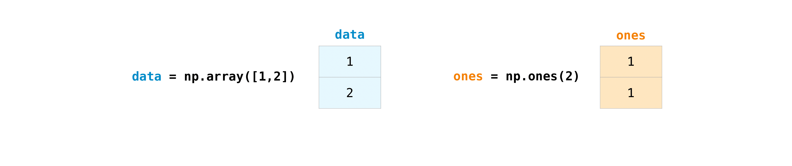
Подписи на рисунке: data — массив данных; ones — массив единиц. Эти слова также служат именами переменных в примере.Сложить массивы можно с помощью знака плюс.
>>> data = np.array([1, 2])
>>> ones = np.ones(2, dtype=np.int_)
>>> data + ones
array([2, 3])
 Подписи на рисунке: data — данные; ones — единицы. Сложение выполняется поэлементно.
Подписи на рисунке: data — данные; ones — единицы. Сложение выполняется поэлементно.
Конечно, вы можете сделать больше, чем просто сложение!
>>> data - ones
array([0, 1])
>>> data * data
array([1, 4])
>>> data / data
array([1., 1.])
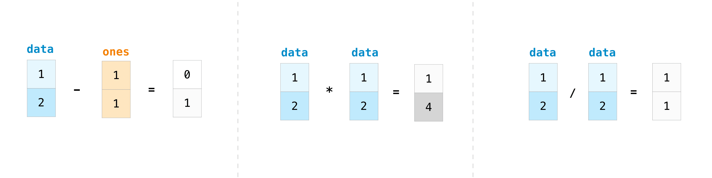
Подписи на рисунке: data — данные; ones — единицы. Показаны поэлементные вычитание, умножение и деление.Основные операции просты с NumPy. Если вы хотите найти сумму элементов в массиве, вы бы использовали sum(). Это работает для 1D-массивов, 2D-массивов и массивов в более высоких измерениях.
>>> a = np.array([1, 2, 3, 4])
>>> a.sum()
10
Чтобы просуммировать элементы двумерного массива по строкам или столбцам, задайте ось.
Если начать с этого массива:
>>> b = np.array([[1, 1], [2, 2]])
Вы можете суммировать по оси строк с помощью:
>>> b.sum(axis=0)
array([3, 3])
Вы можете суммировать по оси столбцов с помощью:
>>> b.sum(axis=1)
array([2, 4])
Трансляция массивов (broadcasting)#
Иногда требуется операция между массивом и одним числом, также называемая операцией между вектором и скаляром, либо между массивами разного размера. Например, массив data содержит расстояния в милях, а вам нужны километры. Это можно сделать так:
>>> data = np.array([1.0, 2.0])
>>> data * 1.6
array([1.6, 3.2])

NumPy понимает, что умножение нужно выполнить для каждого элемента. Этот механизм называется трансляцией массивов. Он позволяет выполнять операции над массивами разной формы. Размеры соответствующих измерений должны быть совместимы: например, равны у обоих массивов либо равны 1 у одного из них. Если они несовместимы, возникает ValueError.
Другие полезные операции с массивами#
В этом разделе рассматриваются максимум, минимум, сумма, среднее, произведение, стандартное отклонение и другие операции
NumPy также предоставляет функции агрегирования. Помимо min, max и sum можно использовать mean для среднего, prod для произведения всех элементов, std для стандартного отклонения и другие функции.
>>> data = np.array([1, 2, 3])
>>> data.max()
3
>>> data.min()
1
>>> data.sum()
6
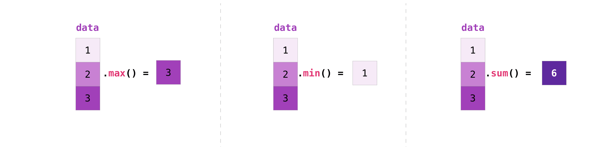
Подписи на рисунке: data — данные. sum — сумма элементов; min — минимум; max — максимум.Начнем с этого массива под названием «a».
>>> a = np.array([[0.45053314, 0.17296777, 0.34376245, 0.5510652],
... [0.54627315, 0.05093587, 0.40067661, 0.55645993],
... [0.12697628, 0.82485143, 0.26590556, 0.56917101]])
Часто нужно вычислить сводное значение по строке или столбцу. Для рассматриваемых здесь операций по умолчанию результат вычисляется по всему массиву. Примечание переводчика: утверждение оригинала о каждой функции агрегации слишком широко; значение axis по умолчанию нужно проверять для конкретной функции. Например, cumulative_sum для многомерного массива требует указать axis явно. Чтобы найти сумму или минимум элементов массива, выполните:
>>> a.sum()
4.8595784
Или:
>>> a.min()
0.05093587
Можно указать ось, вдоль которой вычисляется агрегирующая функция. Например, axis=0 позволяет найти минимум в каждом столбце.
>>> a.min(axis=0)
array([0.12697628, 0.05093587, 0.26590556, 0.5510652 ])
Четыре значения, перечисленные выше, соответствуют количеству столбцов в вашем массиве. Используя массив из четырех столбцов, вы получите в результате четыре значения.
Подробнее см. описание методов массивов.
Создание матриц #
Вы можете передать списки списков Python для создания 2D-массивов (или «матрицы»), чтобы представить их в NumPy.
>>> data = np.array([[1, 2], [3, 4], [5, 6]])
>>> data
array([[1, 2],
[3, 4],
[5, 6]])
 Подписи на рисунке: Создание двумерного массива из вложенных списков: внутренние списки задают строки.
Подписи на рисунке: Создание двумерного массива из вложенных списков: внутренние списки задают строки.
При работе с матрицами полезны индексация и срезы:
>>> data[0, 1]
2
>>> data[1:3]
array([[3, 4],
[5, 6]])
>>> data[0:2, 0]
array([1, 3])
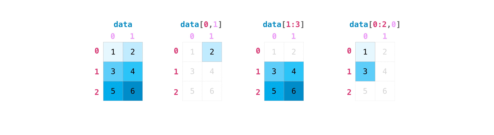
Подписи на рисунке: data — массив данных. Индексы в квадратных скобках задают строки и столбцы; срезы выбирают их диапазоны.Вы можете агрегировать матрицы так же, как агрегировали векторы:
>>> data.max()
6
>>> data.min()
1
>>> data.sum()
21
 Подписи на рисунке: data — данные. min и max находят минимумы и максимумы; параметр axis определяет ось агрегирования.
Подписи на рисунке: data — данные. min и max находят минимумы и максимумы; параметр axis определяет ось агрегирования.
Можно агрегировать все значения матрицы, а также отдельно значения по столбцам или строкам, задав параметр axis. Рассмотрим немного изменённый набор данных:
>>> data = np.array([[1, 2], [5, 3], [4, 6]])
>>> data
array([[1, 2],
[5, 3],
[4, 6]])
>>> data.max(axis=0)
array([5, 6])
>>> data.max(axis=1)
array([2, 5, 6])
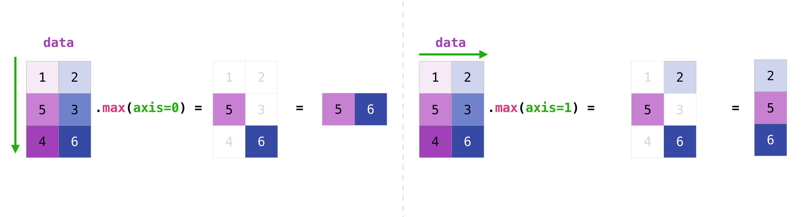
Если две созданные матрицы имеют одинаковую форму, их можно складывать и поэлементно умножать с помощью арифметических операторов.
>>> data = np.array([[1, 2], [3, 4]])
>>> ones = np.array([[1, 1], [1, 1]])
>>> data + ones
array([[2, 3],
[4, 5]])
 Подписи на рисунке: data — данные; ones — массив единиц. Арифметическая операция применяется к соответствующим элементам.
Подписи на рисунке: data — данные; ones — массив единиц. Арифметическая операция применяется к соответствующим элементам.
Вы можете выполнять эти арифметические операции на матрицах разных размеров, но только в том случае, если одна матрица имеет только один столбец или одну строку.В этом случае NumPy будет использовать для операции свои правила трансляции массивов.
>>> data = np.array([[1, 2], [3, 4], [5, 6]])
>>> ones_row = np.array([[1, 1]])
>>> data + ones_row
array([[2, 3],
[4, 5],
[6, 7]])
 Подписи на рисунке: data — данные; ones_row — строка единиц. При трансляции одна строка используется для всех строк массива.
Подписи на рисунке: data — данные; ones_row — строка единиц. При трансляции одна строка используется для всех строк массива.
При выводе N-мерных массивов NumPy быстрее всего меняется индекс последней оси, а медленнее всего — первой. Например:
>>> np.ones((4, 3, 2))
array([[[1., 1.],
[1., 1.],
[1., 1.]],
[[1., 1.],
[1., 1.],
[1., 1.]],
[[1., 1.],
[1., 1.],
[1., 1.]],
[[1., 1.],
[1., 1.],
[1., 1.]]])
Часто нужно сразу заполнить массив начальными значениями. Для этого в NumPy есть, например, функции ones() и zeros(), а для генерации случайных чисел — класс random.Generator. Достаточно передать нужное число элементов:
>>> np.ones(3)
array([1., 1., 1.])
>>> np.zeros(3)
array([0., 0., 0.])
>>> rng = np.random.default_rng() # the simplest way to generate random numbers
>>> rng.random(3)
array([0.63696169, 0.26978671, 0.04097352])
Комментарии к примеру на русском
- Самый простой способ генерировать случайные числа

Также можно создать двумерный массив с помощью ones(), zeros() и random(), передав кортеж размеров матрицы:
>>> np.ones((3, 2))
array([[1., 1.],
[1., 1.],
[1., 1.]])
>>> np.zeros((3, 2))
array([[0., 0.],
[0., 0.],
[0., 0.]])
>>> rng.random((3, 2))
array([[0.01652764, 0.81327024],
[0.91275558, 0.60663578],
[0.72949656, 0.54362499]]) # may vary
Комментарии к примеру на русском
- Результат может отличаться
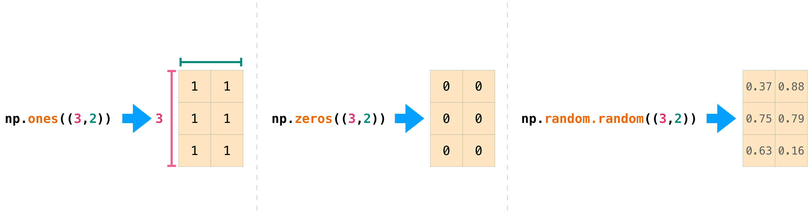
Подписи на рисунке: ones создаёт массив единиц, zeros — массив нулей, random — массив случайных значений. Кортеж (3, 2) задаёт три строки и два столбца.Подробнее о создании массивов, заполненных значениями 0, 1, другими значениями или оставленных без инициализации, см. «Функции создания массивов».
Генерация случайных чисел#
Генерация случайных чисел важна для настройки и оценки многих численных алгоритмов и методов машинного обучения. Она нужна для случайной инициализации весов нейронной сети, разделения данных на случайные наборы или перемешивания выборки. Во всех этих случаях необходимо уметь генерировать случайные, а точнее воспроизводимые псевдослучайные числа.
С помощью Generator.integers можно генерировать случайные целые числа от low (включительно, как принято в NumPy) до high (не включительно). Чтобы включить верхнюю границу, задайте endpoint=True.
Массив формы 2 × 4 со случайными целыми числами от 0 до 4 можно создать так:
>>> rng.integers(5, size=(2, 4))
array([[2, 1, 1, 0],
[0, 0, 0, 4]]) # may vary
Комментарии к примеру на русском
- Результат может отличаться
Как получить уникальные элементы и число их вхождений#
Этот раздел охватывает np.unique()
Вы можете легко найти уникальные элементы в массиве с помощью np.unique.
Например, возьмём такой массив:
>>> a = np.array([11, 11, 12, 13, 14, 15, 16, 17, 12, 13, 11, 14, 18, 19, 20])
с помощью np.unique можно вывести уникальные значения массива:
>>> unique_values = np.unique(a)
>>> print(unique_values)
[11 12 13 14 15 16 17 18 19 20]
Чтобы получить индексы первых вхождений уникальных значений массива NumPy, передайте в return_index значение True при вызове np.unique() вместе с самим массивом.
>>> unique_values, indices_list = np.unique(a, return_index=True)
>>> print(indices_list)
[ 0 2 3 4 5 6 7 12 13 14]
Чтобы получить число вхождений каждого уникального значения массива NumPy, передайте аргумент return_counts вместе с массивом в np.unique().
>>> unique_values, occurrence_count = np.unique(a, return_counts=True)
>>> print(occurrence_count)
[3 2 2 2 1 1 1 1 1 1]
Это также работает с 2D-массивами! Если начать с этого массива:
>>> a_2d = np.array([[1, 2, 3, 4], [5, 6, 7, 8], [9, 10, 11, 12], [1, 2, 3, 4]])
Уникальные значения можно найти следующим образом:
>>> unique_values = np.unique(a_2d)
>>> print(unique_values)
[ 1 2 3 4 5 6 7 8 9 10 11 12]
Если аргумент axis не передан, двумерный массив будет развёрнут в одномерный.
Для поиска уникальных строк или столбцов задайте аргумент axis: значение axis=0 выбирает уникальные строки, а axis=1 — уникальные столбцы.
>>> unique_rows = np.unique(a_2d, axis=0)
>>> print(unique_rows)
[[ 1 2 3 4]
[ 5 6 7 8]
[ 9 10 11 12]]
Получить уникальные строки, индексы их первых вхождений и число повторений можно так:
>>> unique_rows, indices, occurrence_count = np.unique(
... a_2d, axis=0, return_counts=True, return_index=True)
>>> print(unique_rows)
[[ 1 2 3 4]
[ 5 6 7 8]
[ 9 10 11 12]]
>>> print(indices)
[0 1 2]
>>> print(occurrence_count)
[2 1 1]
Чтобы узнать больше о поиске уникальных элементов в массиве, см. unique .
Транспонирование и изменение формы матрицы#
Этот раздел охватывает arr.reshape(), arr.transpose(), arr.T
Часто возникает необходимость транспонировать матрицы. Массивы NumPy обладают свойством T, позволяющим транспонировать матрицу.
 Подписи на рисунке: data.T — транспонированный массив data: строки и столбцы меняются местами.
Подписи на рисунке: data.T — транспонированный массив data: строки и столбцы меняются местами.
Может также понадобиться изменить размеры матрицы. Например, модель может ожидать входные данные другой формы, чем ваш набор данных. В этом случае полезен метод reshape: достаточно передать новые размеры матрицы.
>>> data.reshape(2, 3)
array([[1, 2, 3],
[4, 5, 6]])
>>> data.reshape(3, 2)
array([[1, 2],
[3, 4],
[5, 6]])
 Подписи на рисунке: data — исходные данные. reshape меняет форму массива: здесь на (2, 3) или (3, 2).
Подписи на рисунке: data — исходные данные. reshape меняет форму массива: здесь на (2, 3) или (3, 2).
Также с помощью .transpose() можно обратить порядок осей массива или переставить их в соответствии с заданными значениями.
Если начать с этого массива:
>>> arr = np.arange(6).reshape((2, 3))
>>> arr
array([[0, 1, 2],
[3, 4, 5]])
Вы можете транспонировать свой массив с помощью arr.transpose().
>>> arr.transpose()
array([[0, 3],
[1, 4],
[2, 5]])
Можно также использовать arr.T:
>>> arr.T
array([[0, 3],
[1, 4],
[2, 5]])
Подробнее о транспонировании и изменении формы массивов см. transpose и reshape.
Как изменить порядок элементов массива на обратный#
Этот раздел охватывает np.flip()
Функция NumPy np.flip() обращает порядок элементов массива вдоль оси. При вызове np.flip() укажите массив и нужную ось. Если ось не задана, порядок элементов обращается вдоль всех осей входного массива.
Обратный порядок элементов одномерного массива
Если вы начинаете с 1D-массивом, как этот:
>>> arr = np.array([1, 2, 3, 4, 5, 6, 7, 8])
Развернуть его можно так:
>>> reversed_arr = np.flip(arr)
Чтобы вывести массив с обратным порядком элементов, выполните:
>>> print('Reversed Array: ', reversed_arr)
Reversed Array: [8 7 6 5 4 3 2 1]
Перевернуть 2D-массив
Двумерный массив работает примерно так же.
Если начать с этого массива:
>>> arr_2d = np.array([[1, 2, 3, 4], [5, 6, 7, 8], [9, 10, 11, 12]])
Обратить порядок элементов и по строкам, и по столбцам можно так:
>>> reversed_arr = np.flip(arr_2d)
>>> print(reversed_arr)
[[12 11 10 9]
[ 8 7 6 5]
[ 4 3 2 1]]
Обратить порядок только строк можно так:
>>> reversed_arr_rows = np.flip(arr_2d, axis=0)
>>> print(reversed_arr_rows)
[[ 9 10 11 12]
[ 5 6 7 8]
[ 1 2 3 4]]
Или обратите порядок только столбцов с помощью:
>>> reversed_arr_columns = np.flip(arr_2d, axis=1)
>>> print(reversed_arr_columns)
[[ 4 3 2 1]
[ 8 7 6 5]
[12 11 10 9]]
Можно обратить порядок элементов только в одном столбце или одной строке. Например, во второй строке, то есть строке с индексом 1:
>>> arr_2d[1] = np.flip(arr_2d[1])
>>> print(arr_2d)
[[ 1 2 3 4]
[ 8 7 6 5]
[ 9 10 11 12]]
Можно также обратить порядок элементов столбца с индексом 1, то есть второго столбца:
>>> arr_2d[:,1] = np.flip(arr_2d[:,1])
>>> print(arr_2d)
[[ 1 10 3 4]
[ 8 7 6 5]
[ 9 2 11 12]]
Подробнее об обращении порядка элементов массива см. в описании flip.
Изменение формы и разворачивание многомерных массивов#
В этом разделе рассматриваются .flatten() и ravel()
Есть два распространённых способа развернуть массив в одномерный: .flatten() и .ravel(). Главное отличие: новый массив, полученный через ravel(), по возможности является представлением исходного, то есть использует те же данные. Тогда изменения нового массива затрагивают и исходный. Если копия не требуется, ravel экономит память. Примечание переводчика: оригинал безусловно утверждает, что ravel не копирует данные. На самом деле копия создаётся, если без неё невозможно получить требуемый непрерывный одномерный массив.
Если начать с этого массива:
>>> x = np.array([[1, 2, 3, 4], [5, 6, 7, 8], [9, 10, 11, 12]])
С помощью flatten можно развернуть массив в одномерный.
>>> x.flatten()
array([ 1, 2, 3, 4, 5, 6, 7, 8, 9, 10, 11, 12])
Когда вы используете flatten, изменения в вашем новом массиве не изменят родительский массив.
Например:
>>> a1 = x.flatten()
>>> a1[0] = 99
>>> print(x) # Original array
[[ 1 2 3 4]
[ 5 6 7 8]
[ 9 10 11 12]]
>>> print(a1) # New array
[99 2 3 4 5 6 7 8 9 10 11 12]
Комментарии к примеру на русском
- Исходный массив
- Новый массив
Но когда вы используете ravel, изменения, которые вы вносите в новый массив, будут влиять на родительский массив.
Например:
>>> a2 = x.ravel()
>>> a2[0] = 98
>>> print(x) # Original array
[[98 2 3 4]
[ 5 6 7 8]
[ 9 10 11 12]]
>>> print(a2) # New array
[98 2 3 4 5 6 7 8 9 10 11 12]
Комментарии к примеру на русском
- Исходный массив
- Новый массив
Подробнее о flatten см. в описании ndarray.flatten, а о ravel — в описании ravel.
Как получить дополнительную информацию из строки документации#
Этот раздел охватывает help(), ?, ??
В экосистеме науки о данных Python и NumPy устроены с учётом удобства пользователя. Хороший пример — встроенный доступ к документации. Объект может содержать ссылку на строку документации — docstring. Обычно в ней кратко объясняются назначение объекта и способ его использования. Получить эту информацию позволяет встроенная функция Python help(). Поэтому, когда нужны дополнительные сведения, почти всегда можно быстро обратиться к help().
Например:
>>> help(max)
Help on built-in function max in module builtins:
max(...)
max(iterable, *[, default=obj, key=func]) -> value
max(arg1, arg2, *args, *[, key=func]) -> value
With a single iterable argument, return its biggest item. The
default keyword-only argument specifies an object to return if
the provided iterable is empty.
With two or more ...arguments, return the largest argument.
Для быстрого доступа к документации и связанным сведениям IPython использует символ ?. IPython — командная оболочка для интерактивных вычислений на нескольких языках. Подробнее об IPython.
Например:
In [0]: max?
max(iterable, *[, default=obj, key=func]) -> value
max(arg1, arg2, *args, *[, key=func]) -> value
With a single iterable argument, return its biggest item. The
default keyword-only argument specifies an object to return if
the provided iterable is empty.
With two or more arguments, return the largest argument.
Type: builtin_function_or_method
Вы даже можете использовать эту запись для методов объекта и самих объектов.
Допустим, вы создаете этот массив:
>>> a = np.array([1, 2, 3, 4, 5, 6])
Можно получить много полезной информации: сначала сведения о самом a, затем строку документации класса ndarray, экземпляром которого является a:
In [1]: a?
Type: ndarray
String form: [1 2 3 4 5 6]
Length: 6
File: ~/anaconda3/lib/python3.9/site-packages/numpy/__init__.py
Docstring: <no docstring>
Class docstring:
ndarray(shape, dtype=float, buffer=None, offset=0,
strides=None, order=None)
An array object represents a multidimensional, homogeneous array
of fixed-size items. An associated data-type object describes the
format of each element in the array (its byte-order, how many bytes it
occupies in memory, whether it is an integer, a floating point number,
or something else, etc.)
Arrays should be constructed using `array`, `zeros` or `empty` (refer
to the See Also section below). The parameters given here refer to
a low-level method (`ndarray(...)`) for instantiating an array.
For more information, refer to the `numpy` module and examine the
methods and attributes of an array.
Parameters
----------
(for the __new__ method; see Notes below)
shape : tuple of ints
Shape of created array.
...
Это работает и для функций и других объектов, которые создаёте вы. Не забудьте добавить в функцию строку документации в виде строкового литерала (заключите документацию в """ """ или ''' ''').
Например, если вы создаете эту функцию:
>>> def double(a):
... '''Return a * 2'''
... return a * 2
Вы можете получить информацию о функции:
In [2]: double?
Signature: double(a)
Docstring: Return a * 2
File: ~/Desktop/<ipython-input-23-b5adf20be596>
Type: function
Более подробную информацию можно получить, прочитав исходный код интересующего объекта. Для доступа к нему используется двойной вопросительный знак ??.
Например:
In [3]: double??
Signature: double(a)
Source:
def double(a):
'''Return a * 2'''
return a * 2
File: ~/Desktop/<ipython-input-23-b5adf20be596>
Type: function
Если объект скомпилирован из кода на другом языке, а не Python, ?? выдаёт те же сведения, что и ?. Это характерно для многих встроенных объектов и типов, например:
In [4]: len?
Signature: len(obj, /)
Docstring: Return the number of items in a container.
Type: builtin_function_or_method
и:
In [5]: len??
Signature: len(obj, /)
Docstring: Return the number of items in a container.
Type: builtin_function_or_method
имеют одинаковый вывод, поскольку они были скомпилированы на языке программирования, отличном от Python.
Работа с математическими формулами #
Простота реализации математических формул, работающих с массивами, — это одна из причин, благодаря которой NumPy так широко используется в научном сообществе Python.
Например, это формула средней квадратной ошибки (центральная формула, используемая в моделях машинного обучения под наблюдением, которые имеют дело с регрессией):
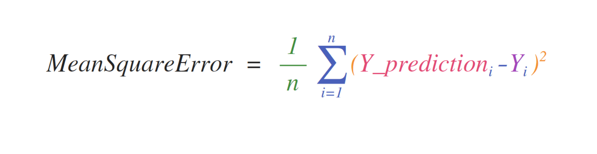
Подписи на рисунке: MeanSquareError — среднеквадратичная ошибка: сумма квадратов разностей предсказанных и фактических значений, делённая на число наблюдений n.Реализация этой формулы проста и понятна в NumPy:
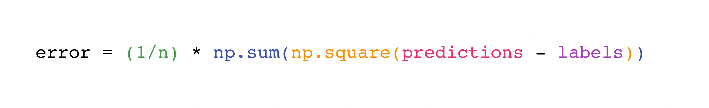
Подписи на рисунке: error — ошибка; predictions — предсказанные значения; labels — фактические значения. Показано вычисление среднеквадратичной ошибки.Этот подход удобен тем, что predictions и labels могут содержать как одно, так и тысячу значений. Важно лишь, чтобы их размеры совпадали.
Это можно представить так:
 Подписи на рисунке: predictions — предсказанные значения; labels — фактические значения; error — ошибка. На схеме показана среднеквадратичная ошибка.
Подписи на рисунке: predictions — предсказанные значения; labels — фактические значения; error — ошибка. На схеме показана среднеквадратичная ошибка.
В этом примере векторы прогнозов и меток содержат по три значения, поэтому n равно 3. После вычитания элементы полученного вектора возводятся в квадрат. Затем NumPy суммирует их: результат служит величиной ошибки прогноза и оценкой качества модели.
 Подписи на рисунке: error — ошибка. Показано поэтапное вычисление суммы квадратов разностей с делением на число наблюдений.
Подписи на рисунке: error — ошибка. Показано поэтапное вычисление суммы квадратов разностей с делением на число наблюдений.
Как сохранять и загружать объекты NumPy#
В этом разделе рассматриваются np.save, np.savez, np.savetxt, np.load, np.loadtxt
В какой-то момент вам понадобится сохранить массивы на диск и загрузить их обратно, не выполняя код заново. NumPy предоставляет для этого несколько способов. Объекты ndarray можно читать и записывать в файлы функциями loadtxt и savetxt для обычных текстовых файлов, функциями load и save для двоичных файлов NumPy с расширением .npy и функцией savez для файлов NumPy с расширением .npz.
Файлы .npy и .npz хранят данные, форму, тип данных dtype и другие сведения, необходимые для восстановления ndarray. Это позволяет корректно загрузить массив даже на другом компьютере с иной архитектурой.
Если вы хотите сохранить один объект ndarray, храните его как файл .npy с использованием np.save. Если вы хотите хранить более одного объекта ndarray в одном файле, сохраните его как файл .npz с использованием np.savez. Вы также можете сохранить несколько массивов в один файл в сжатом формате npz с savez_compressed.
Сохранить массив удобно с помощью np.save(): укажите массив и имя файла. Примечание переводчика: оригинал говорит здесь и о загрузке, но эта функция только сохраняет; для загрузки ниже используется np.load(). Например, создадим такой массив:
>>> a = np.array([1, 2, 3, 4, 5, 6])
Вы можете сохранить его как «filename.npy» с помощью:
>>> np.save('filename', a)
Чтобы восстановить массив из файла, используйте np.load().
>>> b = np.load('filename.npy')
Если вы хотите проверить свой массив, вы можете запустить:
>>> print(b)
[1 2 3 4 5 6]
Массив NumPy можно сохранить в обычный текстовый файл, например .csv или .txt, с помощью np.savetxt.
Например, если вы создаете этот массив:
>>> csv_arr = np.array([1, 2, 3, 4, 5, 6, 7, 8])
Сохранить его в CSV-файл с именем «new_file.csv» можно так:
>>> np.savetxt('new_file.csv', csv_arr)
Вы можете быстро и легко загрузить сохраненный текстовый файл с помощью loadtxt():
>>> np.loadtxt('new_file.csv')
array([1., 2., 3., 4., 5., 6., 7., 8.])
Функции savetxt() и loadtxt() принимают дополнительные необязательные параметры, например header, footer и delimiter. Текстовые файлы удобнее для обмена, но файлы .npy и .npz меньше и быстрее читаются. Для более сложной обработки текста, например строк с пропущенными значениями, используйте genfromtxt.
С помощью savetxt можно задать заголовки, завершающий текст, комментарии и другие параметры.
Подробнее см. описание функций ввода-вывода.
Импорт и экспорт CSV#
Загрузить существующие данные из CSV просто. Самый удобный способ — использовать Pandas.
>>> import pandas as pd
>>> # If all of your columns are the same type:
>>> x = pd.read_csv('music.csv', header=0).values
>>> print(x)
[['Billie Holiday' 'Jazz' 1300000 27000000]
['Jimmie Hendrix' 'Rock' 2700000 70000000]
['Miles Davis' 'Jazz' 1500000 48000000]
['SIA' 'Pop' 2000000 74000000]]
>>> # You can also simply select the columns you need:
>>> x = pd.read_csv('music.csv', usecols=['Artist', 'Plays']).values
>>> print(x)
[['Billie Holiday' 27000000]
['Jimmie Hendrix' 70000000]
['Miles Davis' 48000000]
['SIA' 74000000]]
Комментарии к примеру на русском
- Если все столбцы имеют один тип:
- Можно также просто выбрать нужные столбцы:
 Подписи на рисунке: Artist — исполнитель; Genre — жанр; Listeners — слушатели; Plays — воспроизведения. Sheet1 — имя листа. Показана загрузка таблицы music.csv в pandas; имена исполнителей сохраняются.
Подписи на рисунке: Artist — исполнитель; Genre — жанр; Listeners — слушатели; Plays — воспроизведения. Sheet1 — имя листа. Показана загрузка таблицы music.csv в pandas; имена исполнителей сохраняются.
Использовать Pandas для экспорта массива также просто. Если вы новичок в NumPy, вы можете создать фрейм данных Pandas из значений в вашем массиве, а затем записать фрейм данных в CSV-файл с помощью Pandas.
Если создан такой массив «a»:
>>> a = np.array([[-2.58289208, 0.43014843, -1.24082018, 1.59572603],
... [ 0.99027828, 1.17150989, 0.94125714, -0.14692469],
... [ 0.76989341, 0.81299683, -0.95068423, 0.11769564],
... [ 0.20484034, 0.34784527, 1.96979195, 0.51992837]])
Можно создать DataFrame Pandas
>>> df = pd.DataFrame(a)
>>> print(df)
0 1 2 3
0 -2.582892 0.430148 -1.240820 1.595726
1 0.990278 1.171510 0.941257 -0.146925
2 0.769893 0.812997 -0.950684 0.117696
3 0.204840 0.347845 1.969792 0.519928
Вы можете легко сохранить свой датафрейм с помощью:
>>> df.to_csv('pd.csv')
А прочитать CSV-файл можно так:
>>> data = pd.read_csv('pd.csv')
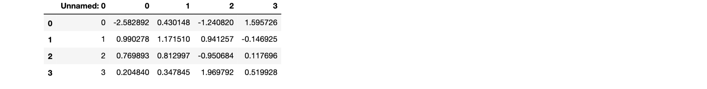
Подписи на рисунке: Unnamed — столбец без имени. В таблице показаны данные, прочитанные из CSV.Массив можно также сохранить с помощью функции NumPy savetxt.
>>> np.savetxt('np.csv', a, fmt='%.2f', delimiter=',', header='1, 2, 3, 4')
Если вы используете командную строку, вы можете прочитать сохраненный CSV в любое время с помощью такой команды, как:
$ cat np.csv
# 1, 2, 3, 4
-2.58,0.43,-1.24,1.60
0.99,1.17,0.94,-0.15
0.77,0.81,-0.95,0.12
0.20,0.35,1.97,0.52
Или в любой момент открыть файл в текстовом редакторе!
Подробнее о Pandas можно узнать в официальной документации Pandas. Инструкции по установке приведены в официальном руководстве по установке Pandas.
Построение графиков по массивам с помощью Matplotlib#
Построить график значений очень просто с помощью Matplotlib.
Например, массив может выглядеть так:
>>> a = np.array([2, 1, 5, 7, 4, 6, 8, 14, 10, 9, 18, 20, 22])
Если у вас уже установлен Matplotlib, вы можете импортировать его с помощью:
>>> import matplotlib.pyplot as plt
# If you're using Jupyter Notebook, you may also want to run the following
# line of code to display your code in the notebook:
%matplotlib inline
Комментарии к примеру на русском
- В Jupyter Notebook можно также выполнить следующую
- строку, чтобы отобразить результат в блокноте:
Чтобы построить график значений, достаточно выполнить:
>>> plt.plot(a)
# If you are running from a command line, you may need to do this:
# >>> plt.show()
Комментарии к примеру на русском
- При запуске из командной строки может понадобиться:
- >>> plt.show()
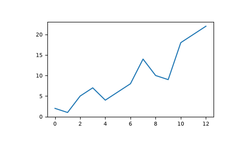
Например, вы можете нарисовать 1D-массив, как это:
>>> x = np.linspace(0, 5, 20)
>>> y = np.linspace(0, 10, 20)
>>> plt.plot(x, y, 'purple') # line
>>> plt.plot(x, y, 'o') # dots
Комментарии к примеру на русском
- Линия
- Точки
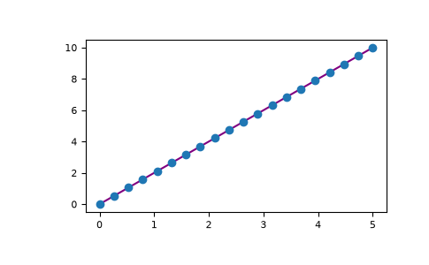
С Matplotlib у вас есть доступ к огромному количеству вариантов визуализации.
>>> fig = plt.figure()
>>> ax = fig.add_subplot(projection='3d')
>>> X = np.arange(-5, 5, 0.15)
>>> Y = np.arange(-5, 5, 0.15)
>>> X, Y = np.meshgrid(X, Y)
>>> R = np.sqrt(X**2 + Y**2)
>>> Z = np.sin(R)
>>> ax.plot_surface(X, Y, Z, rstride=1, cstride=1, cmap='viridis')
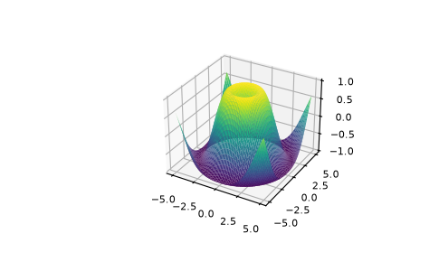
Подробнее о Matplotlib и его возможностях см. официальную документацию. Инструкции по установке Matplotlib приведены в официальном разделе об установке.
Автор иллюстрации: Jay Alammar https://jalammar.github.io/